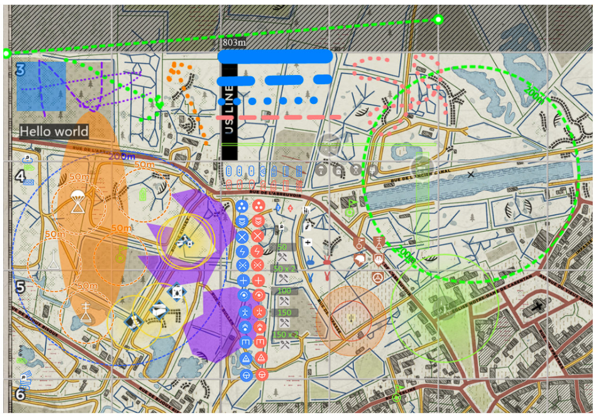
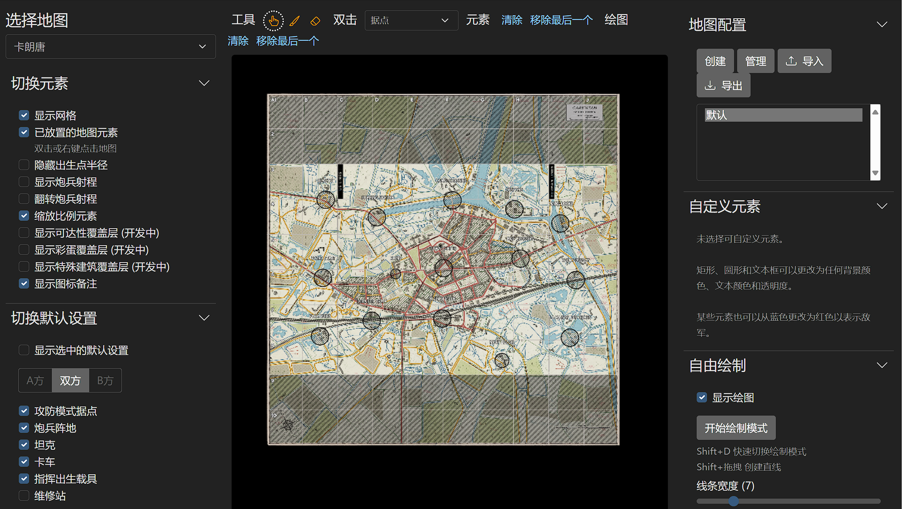
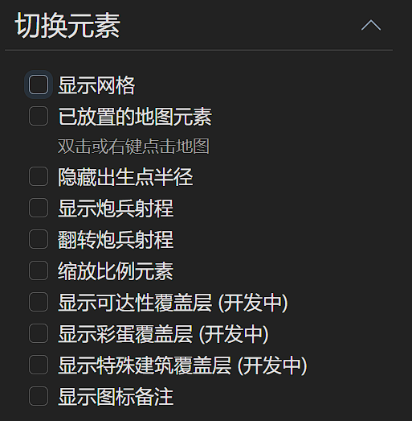
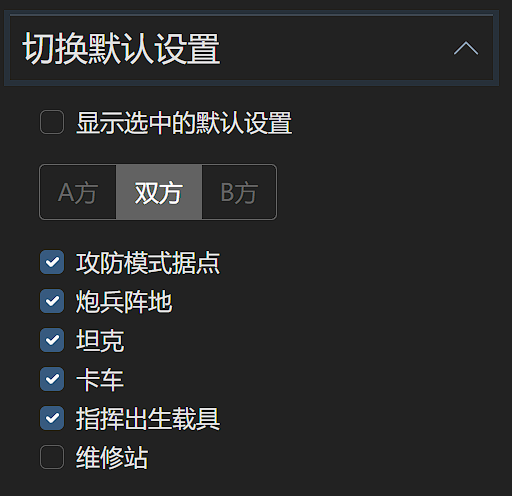
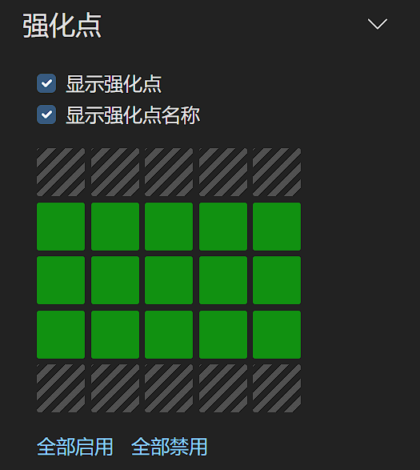
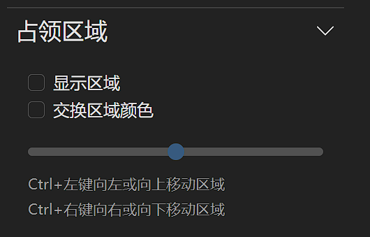
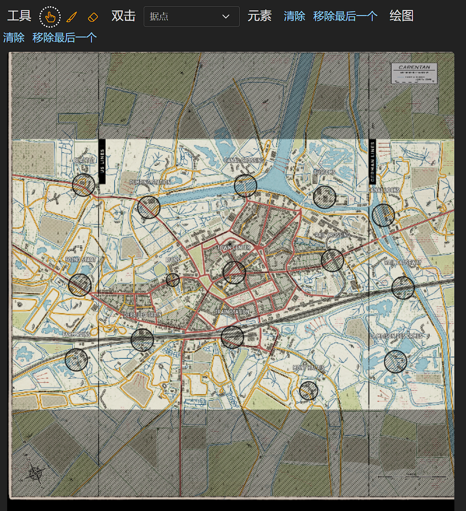
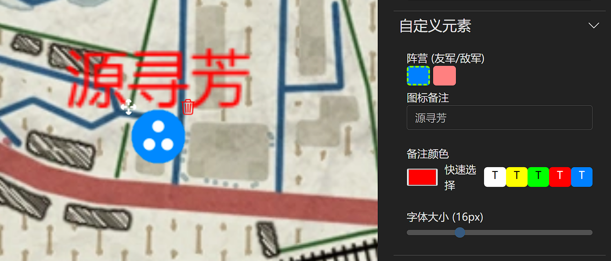
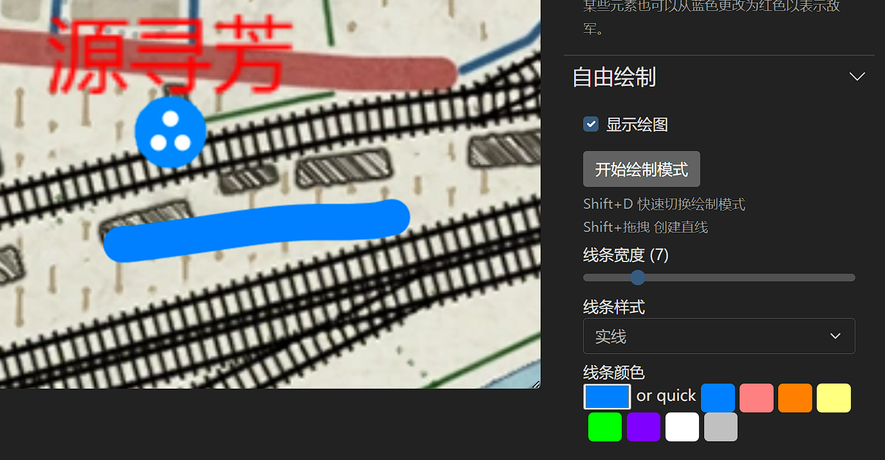

摘要：本网站https://maps.yuanxunfang.top 主要提供了《人间地狱》这款游戏的战略地图部署功能，主要用于实现赛前部署功能，支持国内访问加速。 
项目来源
项目来自于github上的开源项目mattw.io/maps-let-loose/，本网站对于该开源项目进行了二次开发，提供了中文的友好界面，以及更多的自定义元素。 更多信息可以参见我的github项目源码，https://github.com/chenjiahui-offical/maps_let_loose_CN
网页界面
选择地图
左上角的选择地图单击选项即可对于地图进行选择，以下默认以卡朗唐地图为例。
切换元素
显示网格：显示地图上的坐标网格，A1-J10
已放置的地图元素：是否显示放置在地图上的元素（图标和绘图）
隐藏出生点半径：是否隐藏复活点（GR/OP）的预警半径（50m/200m）
显示炮兵射程：是否显示炮兵射程（最大1600m），默认显示在左方
翻转炮兵射程：显示右方炮兵射程
缩放比例元素：当地图缩放时，图标大小是否进行变化
显示可达性覆盖层：显示地图上的可通过位置和禁行区域
显示彩蛋覆盖层：显示地图彩蛋位置
显示特殊建筑覆盖层：显示地图上的特殊建筑
显示图标备注：是否显示图标正上方的备注文字
切换默认位置
显示选中的默认位置：是否显示以下选项
A方 | 双方 | B方：选择需要展示的阵营，A方为左侧，B方为右侧
攻防模式据点：攻防中的防守方的默认据点位置
炮兵阵地：中路的炮兵阵地位置
坦克：开局HQ的坦克位置，1侦察+1轻坦+1中坦
卡车：开局HQ的运兵卡+补给卡的位置
指挥出生载具：半履带的默认刷车点
维修站：HQ的维修站位置
强化点
显示强化点：是否显示强化点
显示强化点名称：是否显示强化点名称
单击显示的强化点即可启用该强化点，绿色为启用，灰色为禁用。或者可一键全部启用/禁用
占领区域
显示区域：是否显示区域颜色，左蓝右红
交换区域颜色：切换至左红右蓝
进度条可以调整双方不同比分下的区域，中间则为2：2，最左侧为5：0，最右侧为0：5
地图编辑
左上角工具依次为：拖拽，画笔，橡皮擦
点击元素选项选好要放置的元素后，在地图上双击即可放置该元素，（或者在地图上右键即可放置元素）
清除为清除全部元素/绘图
移除最后一个即可移除最近放置的元素/绘图
图标自定义元素
图标颜色可选蓝色/红色
图标备注会默认显示在图标正上方，文字大小和颜色可调
点击图标左上角的白色移动按钮即可对于图标进行移动，点击图标右上角的删除键即可删除该图标
自由绘制
显示绘图可显示绘图
点击开始绘制模式即可使用画笔进行涂改
画笔颜色，粗细可调
支持实线，虚线，点线三种线条
按住Shift即可画出直线
导出
支持图片导出和压缩包导出，图片导出可直接导出当前png图像，推荐1920*1920。
压缩包导出需在本站使用压缩包导入才可正常查看。
图片导出更加直观，压缩包导出包含更多细节且可二次编辑。
总结
本文介绍了 https://maps.yuanxunfang.top/ 人间地狱战术地图分析网站，介绍了主要用法和用途，力求为人间地狱CN社区提供更方便的比赛部署工具。